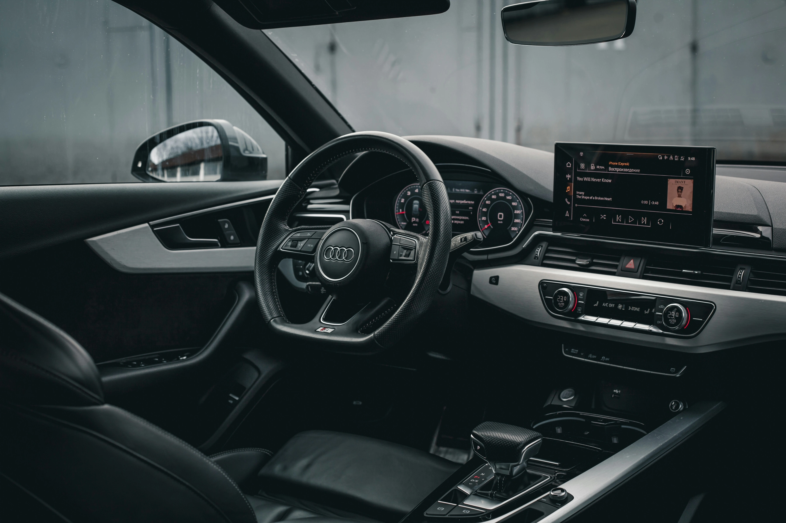

El Seguro de Auto que Necesitás,
con un Asesor a tu Lado
Comparamos aseguradoras y te explicamos la letra chica. Buscamos la mejor opción y te acompañamos si tenés un siniestro.
Cotizá Ahora por WhatsApp¿Por qué cotizar con un asesor y no directo con la aseguradora?
Las pólizas de seguro son complejas. Tener un profesional de tu lado marca la diferencia, antes, durante y después de un siniestro.
Te ayudamos a elegir
Comparamos tu caso entre las principales compañías del mercado y te presentamos las opciones más convenientes para tu vehículo y zona.
Sin costo adicional
Nuestro asesoramiento lo contemplan las aseguradoras en sus costos comerciales, así tengas un asesor de tu lado o no. Vos no pagás nada extra.
Te acompañamos si tenés un siniestro
Nunca te dejamos solo. Te guiamos desde la denuncia y seguimos el caso hasta su resolución, verificando que se cumpla lo pactado en tu póliza.
¿Qué cubre el seguro de auto?
- Responsabilidad civil — el seguro obligatorio por ley. Te protege ante reclamos por daños causados a otras personas, vehículos o propiedades.
- Robo total y/o parcial — cubre el robo del vehículo completo o de sus componentes de fábrica.
- Incendio total y/o parcial — respaldo si el auto sufre daños por fuego, ya sea parcial o a la totalidad de la unidad.
- Accidente total — cobertura en caso de un accidente donde el costo de reparación constituye una destrucción total.
- Daños parciales — cubre los arreglos y reparaciones menores que necesite tu auto después de un choque o accidente.
- Adicionales a tu medida — protección específica para cristales, granizo, cerraduras, inundación, robo de ruedas y coberturas especiales para accesorios extra.
* La cobertura exacta varía según la póliza elegida. Tu asesor te explica cada opción antes de firmar.

Preguntas frecuentes sobre seguros de auto
¿Qué diferencia hay entre el seguro obligatorio y un todo riesgo?
El seguro obligatorio solo cubre daños a terceros, mientras que el todo riesgo protege también tu auto ante casi cualquier imprevisto. En el medio existen muchas opciones con distintos precios y alcances. Tu asesor te ayuda a elegir la que más te conviene.
¿Cuánto sale el seguro de auto en Argentina?
Depende de varios factores como el modelo, el año, la edad del conductor, la zona de radicación y el tipo de cobertura. Un asesor compara entre múltiples aseguradoras para encontrar la mejor relación precio-cobertura para tu caso.
¿Puedo contratar de forma online?
Sí. Con Cover+ te asesorás, cotizás y contratás por WhatsApp. El asesor te guía en todo el proceso y la documentación te llega en forma digital a tu teléfono y/o correo electrónico.
¿Qué pasa si no pago la cuota del seguro?
La cobertura se suspende automáticamente cuando vence esa cuota. Si tenés un siniestro en ese período, la aseguradora puede rechazar el reclamo. Al regularizar el pago, la cobertura se reactiva a las 0 hs del día siguiente.
¿Listo para proteger+ tu auto?
Cotizá ahora sin compromiso. Tu asesor te responde en minutos.
Cotizar Mi Seguro de Auto